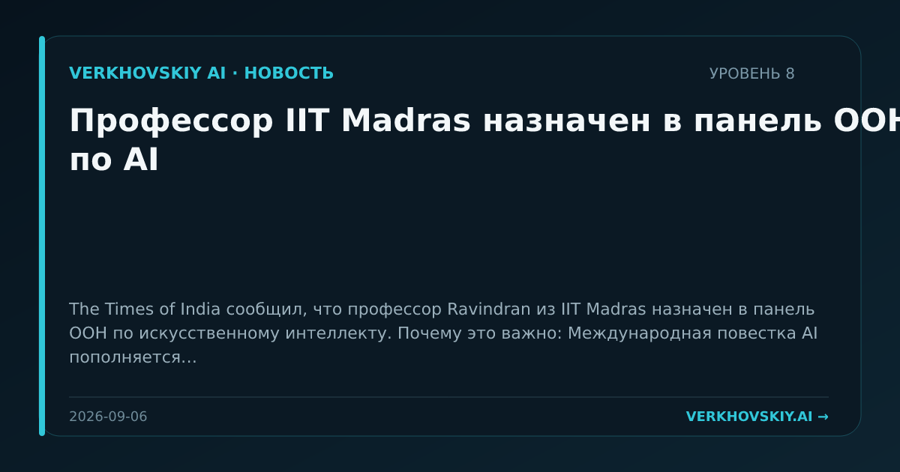

Профессор IIT Madras назначен в панель ООН по AI
The Times of India сообщил, что профессор Ravindran из IIT Madras назначен в панель ООН по искусственному интеллекту. Почему это важно: Международная повестка AI пополняется экспертами из индийской академической среды, что расширяет географию участия в нормировании технологии.